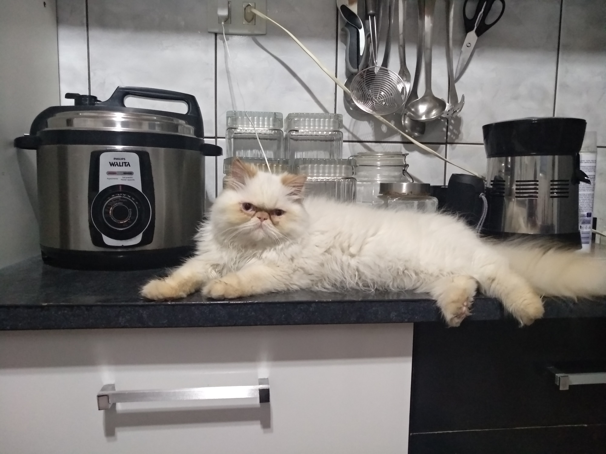
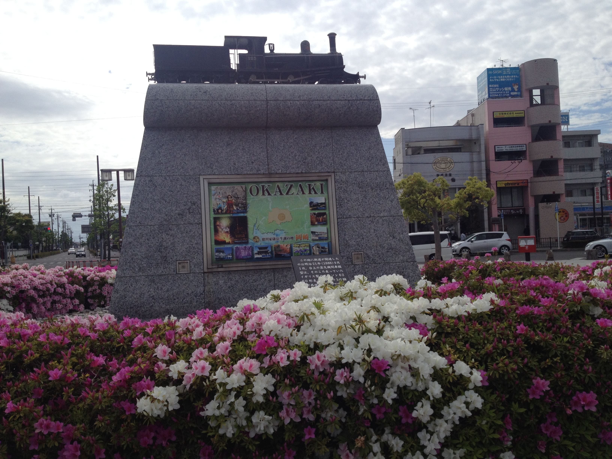

Sobre mim
Engenheiro da Computação
Olá, meu nome é Fernando. Sou bacharel em Engenharia da Computação. Hoje, sou estudante de graduação do curso de tecnologia em desenvolvimento de software multiplataforma na FATEC e também estou concluindo o curso de pós-graduação, especialização em desenvolvimento de software com metodologias ágeis na Universidade Anhembi Morumbi.
Desde 2004 exerci minha carreira na área de infraestrutura e suporte técnico de TI, atuando com atendimento a usuários, gerenciamento de incidentes e problemas, desenvolvendo trajetória em empresas nacionais e multinacionais de pequeno a grande porte.
Família e experiência no exterior.
Sou casado há 13 anos, não tenho filhos. Tenho dois animais de estimação.
Morei durante 3 anos e meio no Japão com minha esposa Priscila. Durante esse período tive a oportunidade de morar, trabalhar e conhecer uma nova cultura.
|  | ||
|  |